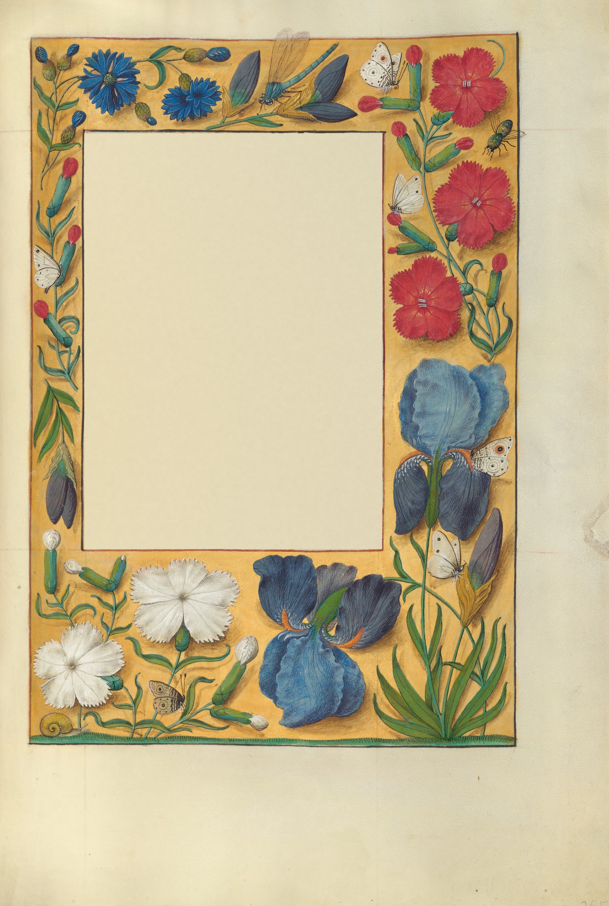

For two hundred years the margins of a prayer book had been filled with pattern: ivy and acanthus drawn flat in ink and burnished gold, a scroll of leaves that knew it was a scroll. Then, in Ghent in the 1470s, in books made for Mary of Burgundy and the people round her, the painters began to treat the margin as a place. They washed it with a coloured ground, a shallow tray of yellow or grey or gold, and laid real things on it one at a time: a pink, a sprig of borage, a split pea pod, a pilgrim’s badge pinned through the vellum, each with a small shadow beside it, as if it had been dropped there that morning and might be picked up again.
This leaf is from the Spinola Hours, made in Ghent or Bruges between about 1510 and 1520 by a team of painters round the one now called the Master of James IV of Scotland. It is the prayer for the feast of Mary Magdalene. The work went in a fixed order. The scribe ruled the sheet and wrote the text and left the margins bare. The illuminator drew the flowers in a fine line, laid the ground round them, painted each one in thin washes and then in solid colour, picked out the veins and stamens with the point of the brush, and put in the shadows last of all.

Ghent or Bruges, about 1515. The scribe has written his lines and left the margins bare. The illuminator rules a frame, draws the flowers in a fine grey line and lays a ground of yellow round them. Then each is painted as if it had been cut that morning and dropped on the open book: pinks, cornflowers, irises, a white butterfly, a snail. The shadows go on last, a soft brown wash beside every petal, and the flowers lift off the page. Five hundred years later a reader’s hand still moves to brush them away.
The shadows are what make it work, and they are not consistent. Each flower casts its own, down and to the right, as if the light came over the reader’s left shoulder, but no shadow agrees exactly with its neighbour’s, and nobody minded. The painter was not making a study of light, only making the page look as though someone had just set things down on it. The yellow ground is the trick that lets it happen: it reads as a surface, a cloth or a tray, rather than as the parchment itself, so the flowers can lie on it, and the text block, left bare in the middle, becomes a window cut through it.
Books of hours were read at set times of day, the same prayers week after week, and the borders were painted for that kind of looking. A reader who knew the Latin by heart had time for the snail in the corner and the white butterfly on the iris, for the clove pinks down the right-hand side, still grown in gardens for their scent, and for the dragonfly at the top, whose wings go over the ruled frame and out onto the margin, the one place on the page where nothing else is allowed to go.